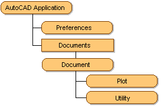

Autodesk AutoCAD 2021: ActiveX Developer's Guide > ActiveX Automation Basics > About the AutoCAD Object Model (VBA/ActiveX) >
The AutoCAD ActiveX Automation Object Model allows you to access application preferences, plot a drawing, or use specialized utilities.
Under the Preferences object is a set of objects, each corresponding to a tab in the Options dialog box. Together, these objects provide access to all the registry-stored settings in the Options dialog box. Drawing-stored settings are contained in the DatabasePreferences object. You can also set and modify options (and system variables that are not part of the Options dialog box) with the SetVariable and GetVariable methods.

The Plot object provides access to settings in the Plot dialog box and gives an application the ability to plot the drawing using various methods.
The Utility object provides user input and conversion functions. The user input functions are methods that prompt the user on the AutoCAD command line for input of various types of data, such as strings, integers, reals, points, and so forth. The conversion functions are methods that operate on AutoCAD-specific data types such as points and angles, in addition to string and number handling.